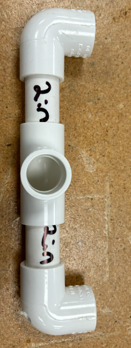
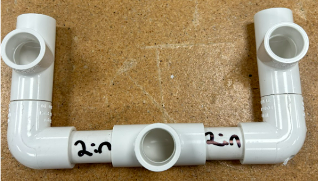
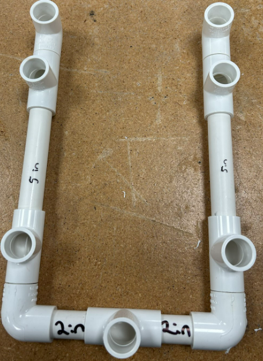
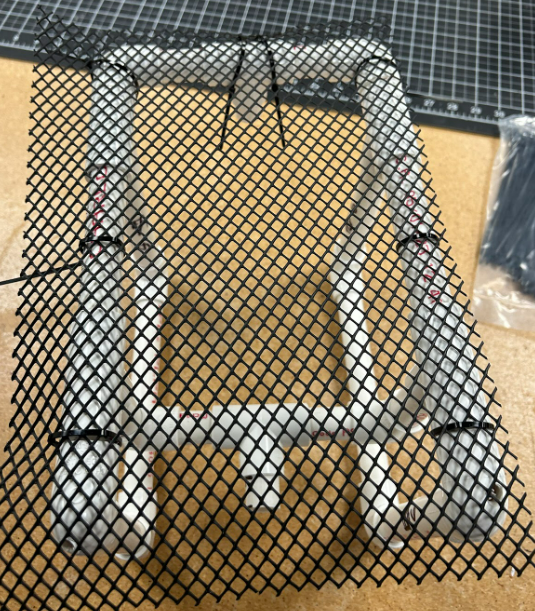
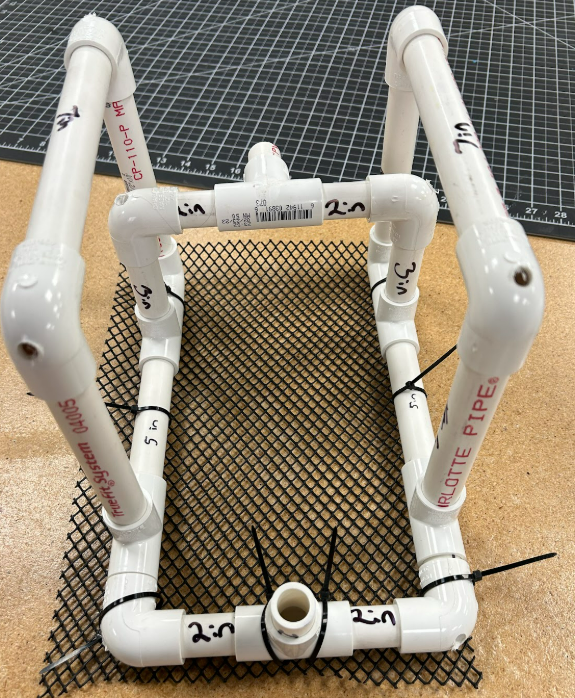
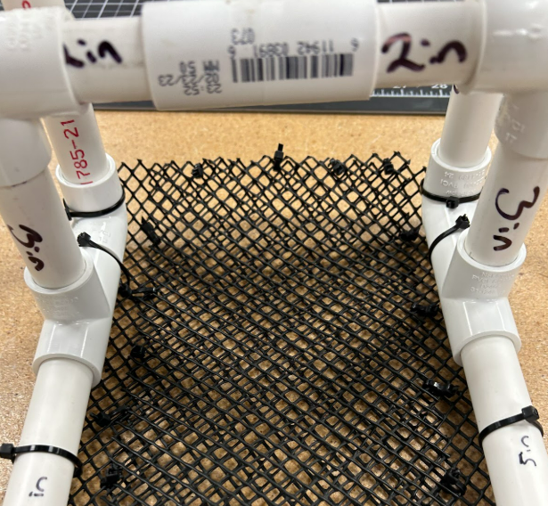
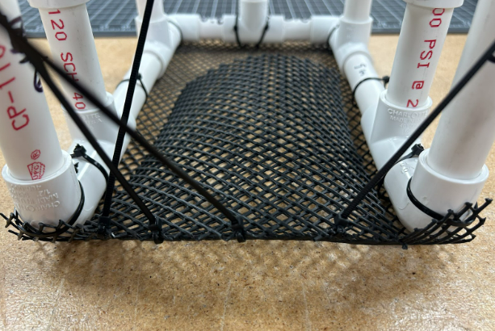

Activity 3: Building an ROV Frame
Week 3 Part 2 of Building Underwater Robots
Description
In this 40-minute session, students will build their own ROV Frame for an underwater robot. It is recommended to present the ROV Presentation first. Students should be broken up into groups with a maximum of 5 in each group. The following is the requirements per robot.
Materials Required
Per Robot:
- PVC Pipe of Various Sizes:
- 2 × 7” long ½” PVC
- 4 × 6” long ½” PVC
- 2 × 5” long ½” PVC
- 2 × 3” long ½” PVC
- 4 × 2” long ½” PVC
- 6 × 1” long ½” PVC
- 10 × ½” PVC Corner piece SxS
- 6 × ½” PVC T pieces SxSxS
- Zip ties
- Netting
Optional: Build Frame Steps PDF
Learning Outcomes
- Understand what an ROV is and identify its core components.
- Compare different underwater movement systems and ROV layouts.
- Apply design thinking and basic engineering principles to construct an ROV frame.
- Collaborate in teams to solve real-world-inspired challenges.
Agenda
1. Gather Your Materials
Pull from the main supply these materials:
- 2x 7 in long ½ in PVC Pipe
- 4x 6 in long ½ in PVC Pipe
- 2x 5 in long ½ in PVC Pipe
- 2x 3 in long ½ in PVC Pipe
- 4x 2 in long ½ PVC Pipe
- 6x 1 in long ½ in PVC Pipe
- 10 ½ in PVC Corner piece SxS
- 6 ½ in PVC T pieces SxSxS
2. Build the Frame
The Base
- Start with the 2 in long PVCs and use a T piece with the exit hole facing the ceiling

- Now attach 2 corner pieces on the other end of the 2 inch long pieces

- Put the 1 in pieces on the other end of each corner piece. It should look like a U shape

- Then attach a T piece with the middle whole facing upwards to the ends of the 1 in pieces.

- Continuing the build the base, attach a 5 inch PVC piece to the other end of the T piece opposite of the 1 inch pieces

- Then attach 2 more T piece to the other ends of the 5 inch PVC pieces

- On the side opposite of the 5 inch pieces, put 1 inch pieces

- Put 2 corner pieces on the ends of the 1 inch pieces you just places and point the end of the corner facing the ceiling

Vertical Motor Holder (VMH)
- Place the 3-inch long PVC in each of the middle holes

- Then put a corner piece on the other ends of the 3 inch long pieces where each hole is facing towards the center

- Connect the two corners with two 2 inch pieces on each side

- Put a T piece in the center with the exit hole facing towards the front of the ROV

Top of the Frame
- Place two 6 inch pieces in the front holes and two 6 inch pieces in the holes towards the back

- Put a corner piece on the other end of each of the 6 inch pieces with the exit hole facing towards the piece in the same line

- Connect the corners together with two 7 inch pieces

Add 2 more 1 inch pieces to the left over T holes. We will be using them to attach our motors later
Carefully use a rubber mallet to make sure the pieces are all tightly in place
Now the frame is complete
3. Add Netting
Cut the Netting
- The goal is to create a net pocket for weights later on. First cut a large piece of net the same width and length as your frame base but add an extra inch to the outside perimeter

- Cut a smaller piece for the pocket that is smaller than the width of the inside of the base

Zip-tie the Netting
- Use Zip-ties to secure the larger piece to the base PVC pieces. Make sure it is secure on all sides. Note that the open end will be for the closed part of our pocket



- Trim excess net off the edge and cut the excess zip-tie ends

- Now secure the pocket net piece to the the top of the base net piece. Leave one edge open enough to slip small rocks or weights into it is recommended to use the edge that will be closest to the forward/backward motor as the opening and the edge that has no PVC as a closed part with zipped ties



- Cut excess zip-tie ends
4. Add Floats
Attaching the Floats
Cut 2 pieces of pool noodle to fit on the top horizontal piece of the ROV. They have to be less than the length of the PVC piece it is on or it will not fit.
Carefully pull out the piece you would like to attach the floats onto and slide in onto the PVC pipe.
Reattach the piece you moved


5. Extensions
- If there is time left over have the students design an ROV logo in Canva
- You could also work on customizing the ROVs
Reflection
- What challenges did you face when building your ROV frame?
- How do you think it will perform in water?
- If you could add one new feature or improvement to an ROV, what would it be?
Learning Outcomes
- Understand what an ROV is and identify its core components.
- Compare different underwater movement systems and ROV layouts.
- Apply design thinking and basic engineering principles to construct an ROV frame.
- Collaborate in teams to solve real-world-inspired challenges.